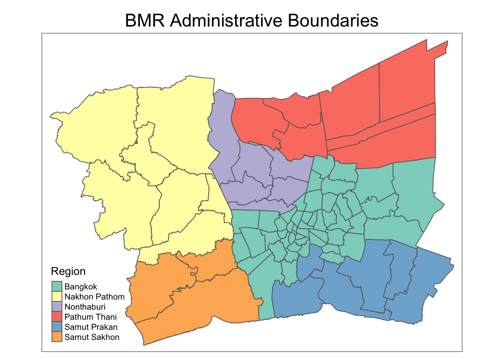
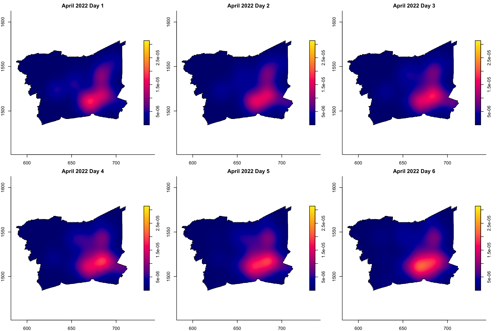
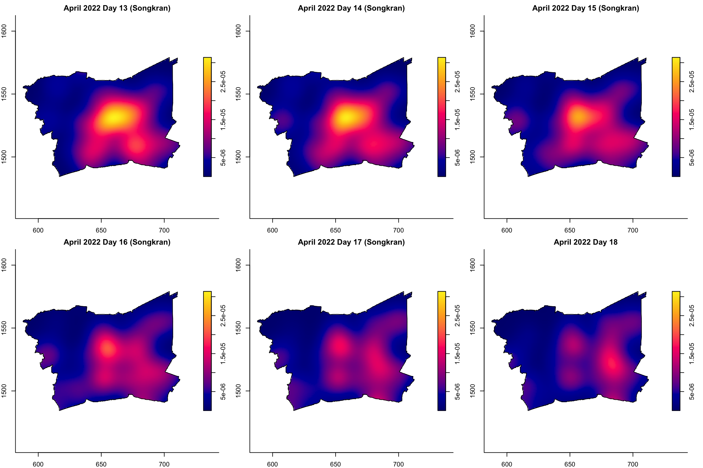
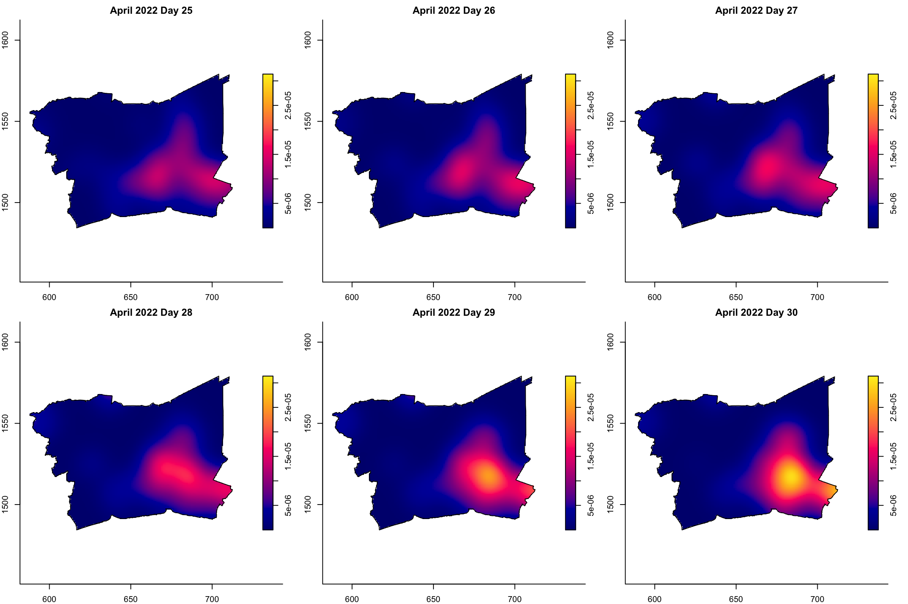

pacman::p_load(tidyverse, sf, tmap, spNetwork, spatstat, plotly, gtsummary, sparr)Take Home Exercise 1
In this exercise, we will apply spatial and spatio-temporal point pattern analysis methods to identify factors affecting road traffic accidents in the Bangkok Metropolitan Region (BMR), including visualizing spatio-temporal dynamics, conducting spatial analysis using Network Spatial Point Patterns, and analyzing spatio-temporal patterns using Temporal Network Spatial Point Patterns.
1 Assignment Task
2 Overview
In this exercise, we will apply spatial and spatio-temporal point pattern analysis methods to identify factors affecting road traffic accidents in the Bangkok Metropolitan Region (BMR), including:
- visualizing spatio-temporal dynamics,
- conducting spatial analysis using Network Spatial Point Patterns, and
- analyzing spatio-temporal patterns using Temporal Network Spatial Point Patterns.
3 The Analytical Questions
This study seeks to uncover the factors influencing road traffic accidents in the Bangkok Metropolitan Region (BMR) by utilizing both spatial and spatio-temporal point patterns analysis methods.
Our key questions are:
- What behavioral, environmental, and temporal factors contribute to these accidents?
- What are the spatial and temporal patterns of road traffic accidents in BMR?
- Are traffic accidents in the BMR randomly distributed throughout the region?
- If the distribution is not random, where are the areas with higher concentrations of accidents?
4 The Data
The following 3 datasets will be used in this exercise.
| Dataset Name | Description | Format | Source |
|---|---|---|---|
| Thailand Road Accident [2019-2022] | Data on road accidents in Thailand, including details on location, severity, and date of incidents. | CSV | Kaggle |
| Thailand Roads (OpenStreetMap Export) | Geospatial data showing the complete road network of Thailand, extracted from OpenStreetMap. | ESRI Shapefile | Humanitarian Data Exchange (HDX) |
| Thailand - Subnational Administrative Boundaries | Geospatial dataset detailing the administrative boundaries of Thailand’s provinces and districts. | ESRI Shapefile | Humanitarian Data Exchange (HDX) |
5 Installing and Launching the R Packages
The following R packages will be used in this exercise:
| Package | Purpose | Use Case in Exercise |
|---|---|---|
| tidyverse | A collection of packages for data manipulation, visualization, and data analysis. | Importing, cleaning, and transforming data for analysis. |
| sf | Imports, manages, and processes vector-based geospatial data. | Handling and analyzing geospatial data such as road networks and administrative boundaries. |
| tmap | Creates both static and interactive thematic maps with high cartographic quality. | Visualizing road traffic accident locations and spatial patterns in Thailand. |
| spNetwork | Provides tools for network-constrained spatial data analysis, such as point pattern analysis on road networks. | Conducting network spatial point pattern analysis to study traffic accident patterns along road networks. |
| spatstat | A toolkit for spatial point pattern analysis. | Performing advanced spatial analysis, such as identifying hotspots of road traffic accidents. |
| plotly | Creates interactive and web-ready visualizations. | Building interactive charts and maps to explore the spatio-temporal dynamics of traffic accidents. |
| gtsummary | Generates publication-ready summary tables of statistical results. | Summarizing descriptive statistics and results from the analysis of road traffic accidents. |
| sparr | Provides tools for spatio-temporal analysis of point patterns, including kernel density estimation. | Performing spatio-temporal analysis to assess the spread and dynamics of road traffic accidents over time. |
To install and load these packages, use the following code:
5.1 Reproducibilty
For reproducible results of this exercise, we will use seed value, 1234.
set.seed(1234)6 Import Data and Preparation
In this section, we will perform sanity checks on the raw data from from the official data sources and identify useful data for our case study area.
6.1 Thai Road Accident Data
Firstly, we will import the Thai Road Accident dataset from 2019-2022 using read_csv() of readr package.
rdacc_sf <- read_csv("data/raw_data/thai_road_accident_2019_2022.csv")
rdacc_sf# A tibble: 81,735 × 18
acc_code incident_datetime report_datetime province_th province_en
<dbl> <dttm> <dttm> <chr> <chr>
1 571905 2019-01-01 00:00:00 2019-01-02 06:11:00 ลพบุรี Loburi
2 3790870 2019-01-01 00:03:00 2020-02-20 13:48:00 อุบลราชธานี Ubon Ratchathani
3 599075 2019-01-01 00:05:00 2019-01-01 10:35:00 ประจวบคีรีขันธ์ Prachuap Khiri …
4 571924 2019-01-01 00:20:00 2019-01-02 05:12:00 เชียงใหม่ Chiang Mai
5 599523 2019-01-01 00:25:00 2019-01-04 09:42:00 นครสวรรค์ Nakhon Sawan
6 571982 2019-01-01 00:30:00 2019-01-07 12:46:00 แม่ฮ่องสอน Mae Hong Son
7 612782 2019-01-01 00:30:00 2019-10-25 14:25:00 ชุมพร Chumphon
8 599235 2019-01-01 00:35:00 2019-01-02 16:23:00 สิงห์บุรี Sing Buri
9 600643 2019-01-01 00:40:00 2019-01-11 10:01:00 สงขลา Songkhla
10 599105 2019-01-01 00:45:00 2019-01-01 10:11:00 ตราด Trat
# ℹ 81,725 more rows
# ℹ 13 more variables: agency <chr>, route <chr>, vehicle_type <chr>,
# presumed_cause <chr>, accident_type <chr>,
# number_of_vehicles_involved <dbl>, number_of_fatalities <dbl>,
# number_of_injuries <dbl>, weather_condition <chr>, latitude <dbl>,
# longitude <dbl>, road_description <chr>, slope_description <chr>From the output above, we can observe that there are 18 columns in this dataset and there are 81,735 accidents recorded in this dataset.
We can check data dictionary from Kaggle to understand this dataset.
| Column | Description |
|---|---|
| acc_code | The accident code or identifier. |
| incident_datetime | The date and time of the accident occurrence. |
| report_datetime | The date and time when the accident was reported. |
| province_th | The name of the province in Thailand, written in Thai. |
| province_en | The name of the province in Thailand, written in English. |
| agency | The government agency responsible for the road and traffic management. |
| route | The route or road segment where the accident occurred. |
| vehicle_type | The type of vehicle involved in the accident. |
| presumed_cause | The presumed cause or reason for the accident. |
| accident_type | The type or nature of the accident. |
| number_of_vehicles_involved | The number of vehicles involved in the accident. |
| number_of_fatalities | The number of fatalities resulting from the accident. |
| number_of_injuries | The number of injuries resulting from the accident. |
| weather_condition | The weather condition at the time of the accident. |
| latitude | The latitude coordinate of the accident location. |
| longitude | The longitude coordinate of the accident location. |
| road_description | The description of the road type or configuration where the accident occurred. |
| slope_description | The description of the slope condition at the accident location. |
Next, we check for null values.
null_counts <- sapply(rdacc_sf, function(x) sum(is.na(x)))
null_counts acc_code incident_datetime
0 0
report_datetime province_th
0 0
province_en agency
0 0
route vehicle_type
0 0
presumed_cause accident_type
0 0
number_of_vehicles_involved number_of_fatalities
0 0
number_of_injuries weather_condition
0 0
latitude longitude
359 359
road_description slope_description
0 0 data.frame(Column = names(null_counts), Null_Count = null_counts) Column Null_Count
acc_code acc_code 0
incident_datetime incident_datetime 0
report_datetime report_datetime 0
province_th province_th 0
province_en province_en 0
agency agency 0
route route 0
vehicle_type vehicle_type 0
presumed_cause presumed_cause 0
accident_type accident_type 0
number_of_vehicles_involved number_of_vehicles_involved 0
number_of_fatalities number_of_fatalities 0
number_of_injuries number_of_injuries 0
weather_condition weather_condition 0
latitude latitude 359
longitude longitude 359
road_description road_description 0
slope_description slope_description 0From the output above, we can notice that are 359 missing data in the latitude (lat) and longitude (lon) columns. We will remove these rows as they make up <5% of the total records.
Next, we check for duplicate values.
duplicate_count <- sum(duplicated(rdacc_sf))
duplicate_count[1] 0There are no exact duplicates in this dataset.
Next, we observe the provinces available in this dataset.
# Display unique values in the "ST" column sorted in ascending order
sort(unique(rdacc_sf$province_en)) [1] "Amnat Charoen" "Ang Thong"
[3] "Bangkok" "buogkan"
[5] "Buri Ram" "Chachoengsao"
[7] "Chai Nat" "Chaiyaphum"
[9] "Chanthaburi" "Chiang Mai"
[11] "Chiang Rai" "Chon Buri"
[13] "Chumphon" "Kalasin"
[15] "Kamphaeng Phet" "Kanchanaburi"
[17] "Khon Kaen" "Krabi"
[19] "Lampang" "Lamphun"
[21] "Loburi" "Loei"
[23] "Mae Hong Son" "Maha Sarakham"
[25] "Mukdahan" "Nakhon Nayok"
[27] "Nakhon Pathom" "Nakhon Phanom"
[29] "Nakhon Ratchasima" "Nakhon Sawan"
[31] "Nakhon Si Thammarat" "Nan"
[33] "Narathiwat" "Nong Bua Lam Phu"
[35] "Nong Khai" "Nonthaburi"
[37] "Pathum Thani" "Pattani"
[39] "Phangnga" "Phatthalung"
[41] "Phayao" "Phetchabun"
[43] "Phetchaburi" "Phichit"
[45] "Phitsanulok" "Phra Nakhon Si Ayutthaya"
[47] "Phrae" "Phuket"
[49] "Prachin Buri" "Prachuap Khiri Khan"
[51] "Ranong" "Ratchaburi"
[53] "Rayong" "Roi Et"
[55] "Sa Kaeo" "Sakon Nakhon"
[57] "Samut Prakan" "Samut Sakhon"
[59] "Samut Songkhram" "Saraburi"
[61] "Satun" "Si Sa Ket"
[63] "Sing Buri" "Songkhla"
[65] "Sukhothai" "Suphan Buri"
[67] "Surat Thani" "Surin"
[69] "Tak" "Trang"
[71] "Trat" "Ubon Ratchathani"
[73] "Udon Thani" "unknown"
[75] "Uthai Thani" "Uttaradit"
[77] "Yala" "Yasothon" From the output above, we can notice that the dataset contains data from across 78 provinces in Thailand. Since our study area is only in Bangkok Metropolitan Region (BMR), we will filter the data for records in “Bangkok”, “Nonthaburi”, “Nakhon Pathom”, “Pathum Thani”, “Samut Prakan”, “Samut Sakhon” only.
# list province names in BMR
bmr_regions <- c("Bangkok", "Nonthaburi", "Nakhon Pathom", "Pathum Thani", "Samut Prakan", "Samut Sakhon")
Note
We will perform the data preprocessing steps as follows:
accidents_bmr <- rdacc_sf %>%
filter(province_en %in% bmr_regions) %>%
filter (!is.na(longitude) & longitude != "",
!is.na(latitude ) & latitude != "") %>%
st_as_sf(coords = c(
"longitude", "latitude"),
crs=4326) %>%
st_transform(crs=32647)6.2 Thailand Subnational Administration Boundary
The Thailand subnational administrative boundaries dataset includes four levels: - country (level 0), - province (level 1), - district (level 2), and - sub-district (level 3).
For this analysis, we will focus on the 6 provinces in the Bangkok Metropolitan Region (BMR) using level 2 boundaries as it provides a finer level of detail and allows for a more granular understanding of spatial patterns and accident hotspots within the Bangkok Metropolitan Region (BMR).
The data will be loaded with st_read() and transformed to EPSG:32647 (UTM Zone 47N, meters).
admin_boundary <- st_read(dsn = "data/raw_data",
# try different layer
# 0 country
# layer = "tha_admbnda_adm0_rtsd_20220121") %>%
# 1 province
#layer = "tha_admbnda_adm1_rtsd_20220121") %>%
# 2 district
layer = "tha_admbnda_adm2_rtsd_20220121") %>%
st_transform(crs = 32647)Reading layer `tha_admbnda_adm2_rtsd_20220121' from data source
`/Users/walter/code/isss626/isss626-gaa/Take-home_Ex/Take-home_Ex01/data/raw_data'
using driver `ESRI Shapefile'
Simple feature collection with 928 features and 19 fields
Geometry type: MULTIPOLYGON
Dimension: XY
Bounding box: xmin: 97.34336 ymin: 5.613038 xmax: 105.637 ymax: 20.46507
Geodetic CRS: WGS 84st_crs(admin_boundary)Coordinate Reference System:
User input: EPSG:32647
wkt:
PROJCRS["WGS 84 / UTM zone 47N",
BASEGEOGCRS["WGS 84",
ENSEMBLE["World Geodetic System 1984 ensemble",
MEMBER["World Geodetic System 1984 (Transit)"],
MEMBER["World Geodetic System 1984 (G730)"],
MEMBER["World Geodetic System 1984 (G873)"],
MEMBER["World Geodetic System 1984 (G1150)"],
MEMBER["World Geodetic System 1984 (G1674)"],
MEMBER["World Geodetic System 1984 (G1762)"],
MEMBER["World Geodetic System 1984 (G2139)"],
ELLIPSOID["WGS 84",6378137,298.257223563,
LENGTHUNIT["metre",1]],
ENSEMBLEACCURACY[2.0]],
PRIMEM["Greenwich",0,
ANGLEUNIT["degree",0.0174532925199433]],
ID["EPSG",4326]],
CONVERSION["UTM zone 47N",
METHOD["Transverse Mercator",
ID["EPSG",9807]],
PARAMETER["Latitude of natural origin",0,
ANGLEUNIT["degree",0.0174532925199433],
ID["EPSG",8801]],
PARAMETER["Longitude of natural origin",99,
ANGLEUNIT["degree",0.0174532925199433],
ID["EPSG",8802]],
PARAMETER["Scale factor at natural origin",0.9996,
SCALEUNIT["unity",1],
ID["EPSG",8805]],
PARAMETER["False easting",500000,
LENGTHUNIT["metre",1],
ID["EPSG",8806]],
PARAMETER["False northing",0,
LENGTHUNIT["metre",1],
ID["EPSG",8807]]],
CS[Cartesian,2],
AXIS["(E)",east,
ORDER[1],
LENGTHUNIT["metre",1]],
AXIS["(N)",north,
ORDER[2],
LENGTHUNIT["metre",1]],
USAGE[
SCOPE["Engineering survey, topographic mapping."],
AREA["Between 96°E and 102°E, northern hemisphere between equator and 84°N, onshore and offshore. China. Indonesia. Laos. Malaysia - West Malaysia. Mongolia. Myanmar (Burma). Russian Federation. Thailand."],
BBOX[0,96,84,102]],
ID["EPSG",32647]]Let’s observe this dataset for useful attributes to filter for BMR region from the national boundary data.
glimpse(admin_boundary)Rows: 928
Columns: 20
$ Shape_Leng <dbl> 0.08541733, 0.13413177, 0.67634217, 0.08588647, 0.30172202,…
$ Shape_Area <dbl> 0.0004504685, 0.0009501914, 0.0198588627, 0.0003369561, 0.0…
$ ADM2_EN <chr> "Phra Nakhon", "Dusit", "Nong Chok", "Bang Rak", "Bang Khen…
$ ADM2_TH <chr> "พระนคร", "ดุสิต", "หนองจอก", "บางรัก", "บางเขน", "บางกะปิ", "ป…
$ ADM2_PCODE <chr> "TH1001", "TH1002", "TH1003", "TH1004", "TH1005", "TH1006",…
$ ADM2_REF <chr> NA, NA, NA, NA, NA, NA, NA, NA, NA, NA, NA, NA, NA, NA, NA,…
$ ADM2ALT1EN <chr> NA, NA, NA, NA, NA, NA, NA, NA, NA, NA, NA, NA, NA, NA, NA,…
$ ADM2ALT2EN <chr> NA, NA, NA, NA, NA, NA, NA, NA, NA, NA, NA, NA, NA, NA, NA,…
$ ADM2ALT1TH <chr> NA, NA, NA, NA, NA, NA, NA, NA, NA, NA, NA, NA, NA, NA, NA,…
$ ADM2ALT2TH <chr> NA, NA, NA, NA, NA, NA, NA, NA, NA, NA, NA, NA, NA, NA, NA,…
$ ADM1_EN <chr> "Bangkok", "Bangkok", "Bangkok", "Bangkok", "Bangkok", "Ban…
$ ADM1_TH <chr> "กรุงเทพมหานคร", "กรุงเทพมหานคร", "กรุงเทพมหานคร", "กรุงเทพมหาน…
$ ADM1_PCODE <chr> "TH10", "TH10", "TH10", "TH10", "TH10", "TH10", "TH10", "TH…
$ ADM0_EN <chr> "Thailand", "Thailand", "Thailand", "Thailand", "Thailand",…
$ ADM0_TH <chr> "ประเทศไทย", "ประเทศไทย", "ประเทศไทย", "ประเทศไทย", "ประเทศ…
$ ADM0_PCODE <chr> "TH", "TH", "TH", "TH", "TH", "TH", "TH", "TH", "TH", "TH",…
$ date <date> 2019-02-18, 2019-02-18, 2019-02-18, 2019-02-18, 2019-02-18…
$ validOn <date> 2022-01-22, 2022-01-22, 2022-01-22, 2022-01-22, 2022-01-22…
$ validTo <date> NA, NA, NA, NA, NA, NA, NA, NA, NA, NA, NA, NA, NA, NA, NA…
$ geometry <MULTIPOLYGON [m]> MULTIPOLYGON (((662263.2 15..., MULTIPOLYGON (…Similar to the road accident csv file, we can filter for the BMR region using ADM1_EN.
admin_boundary_bmr <- admin_boundary %>%
select("ADM1_EN") %>%
filter(ADM1_EN %in% bmr_regions)Next, we save the filtered data in RDS format for quick loading in future analyses.
write_rds(admin_boundary_bmr, file = "data/rds/admin_boundary_bmr.rds")admin_boundary_bmr <-read_rds("data/rds/admin_boundary_bmr.rds")Let’s visualize the administrative boundaries map using tmap.
tmap_mode('plot')
tm_shape(admin_boundary_bmr) +
tm_fill(col = "ADM1_EN", title = "Region") +
tm_borders() +
tm_layout(main.title = "BMR Administrative Boundaries",
main.title.position = "center")
6.3 Road Lines
Next, we will use st_read() import the Thailand Roads dataset
roads <- st_read(dsn = "data/raw_data",
layer = "hotosm_tha_roads_lines_shp")
Note
We observed that this dataset has over 2 million features.
The geospatial data is in the form of MULTILINESTRING, representing multiple connected line segments. Using st_cast("LINESTRING") simplifies the geometry by converting these into single line segments (LINESTRING), making spatial operations, such as length calculations and spatial joins, easier for analysis.
We also assigned the correct CRS with st_set_crs() before transforming the data to the desired EPSG:32647 projection.
roads_sf <- st_set_crs(roads, 4326) %>%
st_transform(crs = 32647) %>%
st_cast("LINESTRING")st_crs(roads_sf)Next, we can observe some data attributes of this dataset such as highway types.
# Display unique values in the "highway" column sorted in ascending order
sort(unique(roads_sf$highway))For the purpose of this study, we will focus on the 6 Intercity highway classifications: see WikiProject Thailand - OpenStreetMap Wiki.
highway_types <- c("motorway", # controlled-access
"trunk", # uncontrolled-access
"primary", # 3-digit national highway
"secondary", # 4-digit national highway
"tertiary", # all rural roads
"unclassified" # lowest rank of usable public roads
)
roads_sf_filtered <- roads_sf %>%
select("highway") %>%
filter(highway %in% highway_types)After filtering for Intercity highway types, we use st_intersection() to find the roads within BMR region.
roads_bmr <- st_intersection(roads_sf_filtered,
admin_boundary_bmr)Show the code
# raw roads rows
raw_size <- dim(roads_sf)[1]
# roads rows after filter for 6 intercity types
filtered_size <- dim(roads_sf_filtered)[1]
# roads size after filter for bmr region only
bmr_size <- dim(roads_bmr)[1]
reduction_filtered <- raw_size - filtered_size
reduction_bmr <- raw_size - bmr_size
reduction_filtered_percent <- (reduction_filtered / raw_size) * 100
reduction_bmr_percent <- (reduction_bmr / raw_size) * 100
cat("Raw Size:", raw_size, "\n")
cat("Filtered Size:", filtered_size, "\n")
cat("BMR Size:", bmr_size, "\n\n")
cat("Reduction from roads_sf to roads_sf_filtered:\n")
cat("Percentage reduction:", round(reduction_filtered_percent, 2), "%\n\n")
cat("Reduction from roads_sf to roads_bmr:\n")
cat("Percentage reduction:", round(reduction_bmr_percent, 2), "%\n")
Note
In this study, we focus on the 6 intercity highway types within the Bangkok Metropolitan Region (BMR).
First, we filter the data by highway types and then narrow it down to the BMR region. This method results in a 99.01% reduction in data size, from 2,792,362 road features to 27,760.
Alternatively, we could have first isolated the BMR region and then analyzed the distribution of highway types before filtering. However, we chose not to use this approach, as the st_intersection() step would be significantly more time-consuming.
write_rds(roads_bmr, "data/rds/roads_bmr.rds")roads_bmr <- read_rds("data/rds/roads_bmr.rds")7 Feature Engineering
After going through all the 3 datasets, we have a better sense of the dataset that we are working with. In this section, we will transform certain columns to more usable formats and feature engineer new columns to aid our analysis:
break down
incident_datetimeto various factorsadd
seasoncolumn to capture 3 seasons: Refer to Bangkok - Wikipedia- March to May: Hot
- Jun to Oct: Rainy
- Nov to Feb: Cool
add
peak_periodto capture peak hour patterns: Refer to How Do You Beat Bangkok Traffic?- Morning Peak: 7-9 am
- Evening Peak: 4-7 pm
add
songkran_7_dead_dayscolumns to capture 7 deadly days of songkran period: Refer to: 25 deaths in 234 road accidents recorded on 1st of Songkran’s ‘7 dangerous days’,- 7 Deadly Days of Songkran: 11-17 Apr each year
Remove unused columns such as
province_thand so on.
Show the code
accidents_bmr_ft <- accidents_bmr %>%
# extract month number (1 = January, 12 = December)
mutate(month_number = month(incident_datetime)) %>%
# extract month as factor ("Jan", "Feb")
mutate(month_factor = month(incident_datetime, label = TRUE, abbr = TRUE)) %>%
# extract day of month
mutate(day_of_month = day(incident_datetime)) %>%
# extract the day of the week (1 = Mon)
mutate(day_of_week = wday(incident_datetime, week_start = 1)) %>%
# extract year
mutate(year = year(incident_datetime)) %>%
# extract time (HH:MM:SS)
mutate(time = format(incident_datetime, format = "%H:%M:%S")) %>%
# add season col
mutate(season = case_when(
month_number %in% c(3, 4, 5) ~ "Hot", # March to May
month_number %in% c(6, 7, 8, 9, 10) ~ "Rainy", # June to October
month_number %in% c(11, 12, 1, 2) ~ "Cool" # November to February
)) %>%
# add peak period col (7-9 am or 4-7 pm)
mutate(peak_period = case_when(
format(incident_datetime, "%H:%M:%S") >= "07:00:00" & format(incident_datetime, "%H:%M:%S") <= "09:00:00" ~ "Morning Peak",
format(incident_datetime, "%H:%M:%S") >= "16:00:00" & format(incident_datetime, "%H:%M:%S") <= "19:00:00" ~ "Evening Peak",
TRUE ~ "Off-Peak"
)) %>%
# Add column to identify Songkran's "7 Deadly Days"
mutate(songkran_7_dead_days = month_number == 4 & day_of_month >= 11 & day_of_month <= 17) %>%
# drop unused columns
select(-c("province_th",
"incident_datetime",
"report_datetime",
"route",
"agency"))
accidents_bmr_ftThen, we save this processed accident data in RDS data format for future analysis.
write_rds(accidents_bmr_ft, "data/rds/accidents_bmr_ft.rds")accidents_bmr_ft <- read_rds("data/rds/accidents_bmr_ft.rds")8 Exploratory Data Analysis (EDA)
In this section, we conduct an Exploratory Data Analysis (EDA) to visualize the trends and distribution of road accidents in Thailand from 2019 to 2022. A combination of plots and choropleth maps will be used to reveal key patterns and insights.
8.1 Overall Plot
First, we will plot the 3 datasets onto a single choropleth map to gain a general understanding.
Show the code
tmap_mode('plot')
tm_shape(admin_boundary_bmr) +
tm_polygons(col = "ADM1_EN", alpha = 0.6, border.col = "black", lwd = 0.7, title = "Region") +
tm_shape(roads_bmr) +
tm_lines(col = "darkgreen", lwd = 1.5, alpha = 0.8) +
tm_shape(accidents_bmr_ft) +
tm_dots(col = "red", size = 0.05, alpha = 0.5) +
tm_layout(
main.title = "Road Traffic Accidents in Bangkok Metropolitan Region (2019-2022)",
main.title.position = c("center", "top"),
frame = FALSE,
legend.outside = TRUE,
legend.position = c("right", "bottom"),
title.size = 0.8,
legend.text.size = 1,
legend.title.size = 1
)
Note
Observations:
The majority of accidents are concentrated along the Intercity road network.
This suggests that the 6 existing Intercity highway types provide sufficient coverage, and we don’t require to add more highway types from the original roads dataset for this study.
8.2 Visualize Geographic Distribution of Accidents by Year
Next, we use choropleth maps and stacked bar charts to explore the distribution of road traffic accidents across the BMR from 2019 to 2022.
Show the code
tmap_mode('plot')
tm_shape(admin_boundary_bmr) +
tm_polygons(border.col = "darkgray", alpha = 0.5) +
tm_shape(roads_bmr) +
tm_lines(col = "darkgreen", lwd = 0.7) +
tm_shape(accidents_bmr_ft) +
tm_dots(size = 0.2, col = "red", alpha = 0.6) +
# facet by year
tm_facets(by = "year") +
tm_layout(
main.title = "Accident Trends by Year in Bangkok Metropolitan Region (2019-2022)",
main.title.size = 1.5,
main.title.position = c("center", "top"),
frame = FALSE
)Show the code
# Calculate total accidents by year
accidents_by_year <- accidents_bmr_ft %>%
st_drop_geometry() %>%
group_by(year) %>%
summarize(total_accidents = n())
# Calculate total accidents by province and year
accidents_by_province_year <- accidents_bmr_ft %>%
st_drop_geometry() %>%
group_by(year, province_en) %>%
summarize(total_accidents = n()) %>%
ungroup()
# Summarize total accidents for each year (for trendline)
total_accidents_by_year <- accidents_by_province_year %>%
group_by(year) %>%
summarize(total_accidents = sum(total_accidents))
# create stacked bar chart with trendline
fig_accidents_by_year_province <- plot_ly() %>%
# add stack bar chart
add_trace(
data = accidents_by_province_year,
x = ~year,
y = ~total_accidents,
color = ~province_en,
type = 'bar',
text = ~paste(province_en, ": ", total_accidents),
hoverinfo = 'text',
name = ~province_en
) %>%
# add trendline
add_trace(
data = total_accidents_by_year,
x = ~year,
y = ~total_accidents,
type = 'scatter',
mode = 'lines+markers',
line = list(color = 'black', dash = 'dash'),
marker = list(color = 'black', size = 6),
name = 'Total Accidents Trend'
) %>%
layout(
barmode = 'stack',
title = "Total Accidents by Year and Province with Trendline",
xaxis = list(title = "Year"),
yaxis = list(title = "Total Accidents"),
legend = list(title = list(text = "Province"))
)
fig_accidents_by_year_province
Note
Observations:
- Overall, accident trends indicate a general upward trajectory over the years.
- The total number of accidents increased from 2019 to 2022, with a slight dip in 2021.
- Bangkok consistently recorded the highest number of accidents each year.
- Pathum Thani and Samut Prakan also contributed significantly to the accident counts.
- The number of accidents in 2022 saw a noticeable rise, particularly in Bangkok and Samut Sakhon.
8.3 Visualize Geographic Distribution of Accidents by Month
Next, we visualize the distribution of accidents by months and seasons.
Show the code
tmap_mode('plot')
tm_shape(admin_boundary_bmr) +
tm_polygons(border.col = "darkgray", alpha = 0.5) +
tm_shape(roads_bmr) +
tm_lines(col = "darkgreen", lwd = 0.7) +
tm_shape(accidents_bmr_ft) +
tm_dots(size = 0.2, col = "red", alpha = 0.6) +
# facet by month_factor
tm_facets(by = "month_factor") +
tm_layout(
main.title = "Accident Trends by Month in Bangkok Metropolitan Region (2019-2022)",
main.title.size = 1.5,
main.title.position = c("center", "top"),
frame = FALSE
)Show the code
# compute accidents by month, season
accidents_by_month <- accidents_bmr_ft %>%
st_drop_geometry() %>%
group_by(month_factor, season) %>%
summarize(total_accidents = n()) %>%
ungroup()
fig_accidents_by_month_bar <- plot_ly() %>%
# add bar chart
add_trace(
data = accidents_by_month,
x = ~month_factor,
y = ~total_accidents,
color = ~season,
# Assign colors to each season
colors = c('Cool' = 'lightblue', 'Hot' = 'red3', 'Rainy' = 'royalblue3'),
type = 'bar',
name = ~season
) %>%
# Add trendline
add_trace(
data = accidents_by_month,
x = ~month_factor,
y = ~total_accidents,
type = 'scatter',
mode = 'lines+markers',
line = list(color = 'black', dash = 'dash'),
marker = list(color = 'black', size = 6),
name = 'Trendline'
) %>%
layout(
title = "Accidents by Month in Bangkok Metropolitan Region (2019-2022)",
xaxis = list(title = "Month"),
yaxis = list(title = "Total Accidents"),
barmode = 'group',
legend = list(title = list(text = "Season"))
)
fig_accidents_by_month_bar
Note
Observations:
- The cool season (January, November, and December) also shows relatively high accident counts, particularly in December, which concide with the holidays season.
- The rainy season (June to October) has a relatively steady trend of accidents, with no significant peaks or drops.
- April stands out with the highest number of accidents, potentially influenced by the Songkran festival.
8.3.1 Special Mention: Songkran
In this special section, we highlight the impact of the Songkran festival on road accidents in April, a period that is known for increased travel and, consequently, heightened risk on the roads. For meaningful comparison, we compute the average daily accident rate during the 7 “deadly days” of Songkran versus the rest of April (non-Songkran days) from 2019 to 2022.
Show the code
compute_average_daily_accident_rate <- function(data) {
# filter data for April
april_data <- data %>%
st_drop_geometry() %>%
filter(month_factor == "Apr") %>%
group_by(year, songkran_7_dead_days) %>%
summarize(total_accidents = n(), .groups = 'drop') %>%
mutate(
days_count = ifelse(songkran_7_dead_days, 7, 30 - 7),
# Compute the average daily accident rate
average_daily_accidents = total_accidents / days_count,
songkran_label = ifelse(songkran_7_dead_days, "Songkran", "Non-Songkran Days")
) %>%
select(year, songkran_label, average_daily_accidents)
return(april_data)
}
average_daily_accident_rate <- compute_average_daily_accident_rate(accidents_bmr_ft)
fig_accidents_songkran <- plot_ly(
data = average_daily_accident_rate,
x = ~year,
y = ~average_daily_accidents,
color = ~songkran_label,
# Color by Songkran label (During Songkran vs. Non-Songkran Days)
colors = c('Songkran' = 'tomato1', 'Non-Songkran Days' = 'royalblue3'),
type = 'bar',
name = ~songkran_label
) %>%
layout(
title = "Average Daily Accident Rate in April During Songkran vs. Non-Songkran Days (2019-2022)",
xaxis = list(title = "Year"),
yaxis = list(title = "Average Daily Accidents"),
barmode = 'group',
legend = list(title = list(text = "Day Type"))
)
fig_accidents_songkran
Note
Observations:
- Songkran days (in red) consistently show a higher average daily accident rate compared to non-Songkran days (in blue) across all years (2019-2022).
- Non-Songkran days have a relatively steady accident rate across all years, remaining below 10 accidents per day.
- In 2020, due to the COVID-19 pandemic restrictions, Songkran celebrations were suspended. This likely explains the significantly lower accident rates for both day types in 2020.
8.4 Visualize Geographic Distribution of Accidents by Day of Week
Next, we visualize the distribution of accidents by day of week to observe the accident trends.
Show the code
tmap_mode('plot')
tm_shape(admin_boundary_bmr) +
tm_polygons(border.col = "darkgray", alpha = 0.5) +
tm_shape(roads_bmr) +
tm_lines(col = "darkgreen", lwd = 0.7) +
tm_shape(accidents_bmr_ft) +
tm_dots(size = 0.2, col = "red", alpha = 0.6) +
# facet by day of week
tm_facets(by = "day_of_week") +
tm_layout(
main.title = "Accident Trends by Days of Week in BMR (2019-2022)",
main.title.size = 1.5,
main.title.position = c("center", "top"),
frame = FALSE
)Show the code
# Compute accidents by day of the week and group by weekday or weekend
accidents_by_day <- accidents_bmr_ft %>%
st_drop_geometry() %>%
mutate(
day_type = case_when(
day_of_week %in% c(6, 7) ~ "Weekend",
TRUE ~ "Weekday"
)
) %>%
group_by(day_of_week, day_type) %>%
summarize(total_accidents = n()) %>%
ungroup()
fig_accidents_by_day_bar <- plot_ly() %>%
# Add the bar chart
add_trace(
data = accidents_by_day,
x = ~day_of_week,
y = ~total_accidents,
color = ~day_type,
# assign color by weekday, weekend
colors = c('Weekday' = 'orange', 'Weekend' = 'seagreen'),
type = 'bar',
name = ~day_type
) %>%
# Add a trendline
add_trace(
data = accidents_by_day,
x = ~day_of_week,
y = ~total_accidents,
type = 'scatter',
mode = 'lines+markers',
line = list(color = 'black', dash = 'dash'),
marker = list(color = 'black', size = 6),
name = 'Trendline'
) %>%
layout(
title = "Accidents by Day of the Week in Bangkok Metropolitan Region (2019-2022)",
xaxis = list(title = "Day of the Week", tickvals = 1:7, ticktext = c("Mon", "Tue", "Wed", "Thu", "Fri", "Sat", "Sun")),
yaxis = list(title = "Total Accidents"),
barmode = 'group',
legend = list(title = list(text = "Day Type"))
)
fig_accidents_by_day_bar
Note
Observations:
- Weekdays (in orange) show a relatively consistent number of total accidents across Monday to Thursday, with a slight increase towards Friday.
- Both Fridays and Saturdays show high accident numbers suggesting a potential rise in traffic volume or risky driving behavior leading into the weekend.
- The trendline reflects an upward trend from Monday, peaking on Friday, and then declining over the weekend, particularly on Sunday.
8.5 Visualize Geographic Distribution of Accidents by Peak Period
Next, we visualize the distribution of accidents by peak period.
Show the code
tmap_mode('plot')
tm_shape(admin_boundary_bmr) +
tm_polygons(border.col = "darkgray", alpha = 0.5) +
tm_shape(roads_bmr) +
tm_lines(col = "darkgreen", lwd = 0.7) +
tm_shape(accidents_bmr_ft) +
tm_dots(size = 0.2, col = "red", alpha = 0.6) +
# facet by peak_period
tm_facets(by = "peak_period") +
tm_layout(
main.title = "Accident Trends by Peak Period in BMR (2019-2022)",
main.title.size = 1.5,
main.title.position = c("center", "top"),
frame = FALSE
)Show the code
# Group data by year and peak period type
accidents_by_year_peak_period <- accidents_bmr_ft %>%
st_drop_geometry() %>%
group_by(year, peak_period) %>%
summarize(total_accidents = n(), .groups = 'drop') %>%
mutate(
# Calculate the number of hours for each peak period type
hours_count = case_when(
peak_period == "Morning Peak" ~ 2, # 7-9 AM (2 hours)
peak_period == "Evening Peak" ~ 3, # 4-7 PM (3 hours)
peak_period == "Off-Peak" ~ 19 # Remaining hours in a day
),
average_accidents_per_hour = total_accidents / hours_count # Compute average accident rate per hour
)
fig_accidents_trend <- plot_ly(
data = accidents_by_year_peak_period,
x = ~year,
y = ~average_accidents_per_hour,
color = ~peak_period,
colors = c('Morning Peak' = 'tomato1', 'Evening Peak' = 'orange', 'Off-Peak' = 'lightblue'),
type = 'bar',
mode = 'lines+markers',
name = ~peak_period
) %>%
layout(
title = "Average Accident Rate per Hour by Peak Period Type Over the Years",
xaxis = list(title = "Year"),
yaxis = list(title = "Average Accidents per Hour"),
legend = list(title = list(text = "Peak Period"))
)
# Display the plot
fig_accidents_trend
Note
Observations:
- The Morning Peak consistently shows the highest average accident rate per hour across all years, peaking sharply in 2020.
- Evening Peak follows closely, with slightly lower accident rates compared to the Morning Peak but remaining higher than Off-Peak periods.
- Off-Peak accident rates are consistently lower across all years.
- The year 2020 stands out with the highest accident rates across all peak periods, especially in the Morning Peak.
- Overall, both Morning and Evening Peak periods exhibit higher accident rates compared to Off-Peak periods, highlighting rush hours as critical times for road accidents.
8.6 Visualize Geographic Distribution of Accidents by Weather Conditions
Next, we visualize the distribution of accidents by weak conditions.
Show the code
tmap_mode('plot')
tm_shape(admin_boundary_bmr) +
tm_polygons(border.col = "darkgray", alpha = 0.5) +
tm_shape(roads_bmr) +
tm_lines(col = "darkgreen", lwd = 0.7) +
tm_shape(accidents_bmr_ft) +
tm_dots(size = 0.2, col = "red", alpha = 0.6) +
# facet by weather
tm_facets(by = "weather_condition") +
tm_layout(
main.title = "Accident Trends by Weather in BMR (2019-2022)",
main.title.size = 1.5,
main.title.position = c("center", "top"),
frame = FALSE
)We noticed that most of accident data is recorded during clear conditions, followed by rainy conditions. We will discuss our observations in the following section with other factors.
8.7 Visualize Other Factors
In this section, we consolidated our remaining observations of the accident dataset.
Show the code
selected_data <- accidents_bmr_ft %>%
st_drop_geometry() %>%
select(presumed_cause, accident_type, road_description, weather_condition, vehicle_type)
theme_gtsummary_compact()
selected_data %>%
tbl_summary(missing_text = "NA", sort=all_categorical(FALSE) ~ "frequency") %>%
add_n() %>%
modify_caption("**Table of Variable Summary**") %>%
bold_labels()Characteristic |
N |
N = 12,986 1 |
|---|---|---|
| presumed_cause | 12,986 | |
| speeding | 10,143 (78%) | |
| other | 957 (7.4%) | |
| cutting in closely by people/vehicles/animals | 621 (4.8%) | |
| vehicle equipment failure | 365 (2.8%) | |
| falling asleep | 221 (1.7%) | |
| driving under the influence of alcohol | 118 (0.9%) | |
| running red lights/traffic signals | 96 (0.7%) | |
| tailgating | 83 (0.6%) | |
| abrupt lane change | 59 (0.5%) | |
| unfamiliarity with the route/unskilled driving | 53 (0.4%) | |
| illegal overtaking | 50 (0.4%) | |
| failure to yield/signal | 33 (0.3%) | |
| debris/obstruction on the road | 29 (0.2%) | |
| failure to yield right of way | 21 (0.2%) | |
| worn-out/tire blowout | 19 (0.1%) | |
| overloaded vehicle | 18 (0.1%) | |
| reversing vehicle | 15 (0.1%) | |
| dangerous curve | 14 (0.1%) | |
| sudden stop | 14 (0.1%) | |
| slippery road | 8 (<0.1%) | |
| brake/anti-lock brake system failure | 7 (<0.1%) | |
| driving in the wrong lane | 6 (<0.1%) | |
| loss of control | 6 (<0.1%) | |
| failure to signal enter/exit parking | 5 (<0.1%) | |
| using mobile phone while driving | 4 (<0.1%) | |
| disabled vehicle without proper signals/signs | 3 (<0.1%) | |
| insufficient light | 3 (<0.1%) | |
| road in poor condition | 2 (<0.1%) | |
| straddling lanes | 2 (<0.1%) | |
| disabled vehicle without proper signals | 1 (<0.1%) | |
| ignoring stop sign while leaving intersection | 1 (<0.1%) | |
| inadequate visibility | 1 (<0.1%) | |
| medical condition | 1 (<0.1%) | |
| no presumed cause related to driver | 1 (<0.1%) | |
| no road divider lines | 1 (<0.1%) | |
| no traffic signs | 1 (<0.1%) | |
| obstruction in sight | 1 (<0.1%) | |
| repair/construction on the road | 1 (<0.1%) | |
| using psychoactive substances | 1 (<0.1%) | |
| vehicle electrical system failure | 1 (<0.1%) | |
| accident_type | 12,986 | |
| rear-end collision | 6,877 (53%) | |
| rollover/fallen on straight road | 3,916 (30%) | |
| other | 859 (6.6%) | |
| collision with obstruction (on road surface) | 459 (3.5%) | |
| rollover/fallen on curved road | 415 (3.2%) | |
| side collision | 139 (1.1%) | |
| pedestrian collision | 121 (0.9%) | |
| head-on collision (not overtaking) | 102 (0.8%) | |
| collision at intersection corner | 75 (0.6%) | |
| collision during overtaking | 12 (<0.1%) | |
| turning/retreating collision | 11 (<0.1%) | |
| road_description | 12,986 | |
| straight road | 11,084 (85%) | |
| other | 1,004 (7.7%) | |
| wide curve | 488 (3.8%) | |
| grade-separated intersection/ramps | 150 (1.2%) | |
| y-intersection | 73 (0.6%) | |
| t-intersection | 66 (0.5%) | |
| connecting to public/commercial area | 43 (0.3%) | |
| sharp curve | 41 (0.3%) | |
| merge lane | 11 (<0.1%) | |
| connecting to private area | 8 (<0.1%) | |
| four-way intersection | 6 (<0.1%) | |
| u-turn area | 5 (<0.1%) | |
| connecting to school area | 4 (<0.1%) | |
| roundabout | 3 (<0.1%) | |
| weather_condition | 12,986 | |
| clear | 11,711 (90%) | |
| rainy | 1,166 (9.0%) | |
| dark | 81 (0.6%) | |
| other | 22 (0.2%) | |
| foggy | 4 (<0.1%) | |
| land slide | 1 (<0.1%) | |
| natural disaster | 1 (<0.1%) | |
| vehicle_type | 12,986 | |
| private/passenger car | 4,486 (35%) | |
| 4-wheel pickup truck | 3,522 (27%) | |
| motorcycle | 1,687 (13%) | |
| other | 1,088 (8.4%) | |
| large truck with trailer | 998 (7.7%) | |
| 6-wheel truck | 472 (3.6%) | |
| 7-10-wheel truck | 389 (3.0%) | |
| van | 154 (1.2%) | |
| large passenger vehicle | 76 (0.6%) | |
| passenger pickup truck | 63 (0.5%) | |
| bicycle | 18 (0.1%) | |
| pedestrian | 18 (0.1%) | |
| motorized tricycle | 14 (0.1%) | |
| tractor/agricultural vehicle | 1 (<0.1%) | |
| 1
n (%) |
||
Note
Observations:
- Top Causes of Accidents: Behavioral Factors
- Speeding is the leading presumed cause, responsible for 78% of accidents (10,143 cases). This is a clear indication that driver behavior is the primary factor.
- Other behavioral causes include cutting in closely (4.8%), driving under the influence of alcohol (0.9%), and tailgating (0.6%).
- Minor Contribution from Road Conditions
- Road conditions such as slippery roads, debris, and road in poor condition account for a very small portion of the accidents (<1%).
- Weather Conditions
- Clear weather dominates in 90% of cases (as visualized in earlier section), while rainy conditions account for only 9% of accidents. Adverse weather such as foggy or dark conditions plays a negligible role.
- Accident Types
- Most accidents are rear-end collisions (53%) and rollovers on straight roads (30%), again pointing towards driver behavior on straightforward road networks.
- Road Types
- Straight roads are where the vast majority (85%) of accidents occur.
- Vehicle Types
- The majority of accidents involve private/passenger cars (35%) and 4-wheel pickup trucks (27%), followed by Motorcycles (13%)
In summary, based on this dataset, we can observe that behavioral factors like speeding are overwhelmingly the top causes of accidents, while road conditions and weather play a much smaller role.
9 Spatial Measures of Central Tendency
In this section, we are interested in identifying the centrality of road traffic accidents within the Bangkok Metropolitan Region (BMR) by computing two key spatial measures: the mean center and the median center.
The mean centre represents the average location of all accident points in the region while the median center which is less influenced by outliers, provides a more robust indication of where accidents tend to cluster, unaffected by unusually high or low values in specific areas.
# Extract coordinates
accidents_xy <- st_coordinates(accidents_bmr_ft)
mean_center <- accidents_xy %>%
colMeans()
mean_center X Y
668399.5 1523495.8 median_center <- accidents_xy %>%
apply(2, median)
median_center X Y
673446.1 1520755.0
Note
Observations:
The similarity between the mean center and median center suggests that the distribution of road accidents in the Bangkok Metropolitan Region is relatively balanced, with no significant outliers skewing the spatial patterns.
9.1 Spatial Measures of Central Tendency Over the Years
In this section, we are interested to observe in what direction has the mean centre of the Thailand road accidents moved over the years.
Show the code
mean_median_by_year <- accidents_bmr_ft %>%
group_by(year) %>%
summarise(
mean_center_x = mean(st_coordinates(geometry)[, 1]),
mean_center_y = mean(st_coordinates(geometry)[, 2]),
median_center_x = median(st_coordinates(geometry)[, 1]),
median_center_y = median(st_coordinates(geometry)[, 2])
)
plot(st_geometry(admin_boundary_bmr), main = "Mean Centers of Accidents in BMR over the Years")
points(accidents_xy[, 1], accidents_xy[, 2], cex = 0.7, pch = 21)
colors <- c("goldenrod2", "sienna2", "hotpink1", "red1")
years <- unique(accidents_bmr_ft$year)
for (i in 1:nrow(mean_median_by_year)) {
points(mean_median_by_year$mean_center_x[i], mean_median_by_year$mean_center_y[i],
pch = '*', col = colors[i], cex = 4, lwd = 2)
}
legend("topright", legend = paste0("Year: ", years), col = colors, pch = '*',
pt.cex = 1.5, title = "Centers")
Note
Observations:
- The mean centers of accidents in BMR over the years from 2019 to 2022 are relatively close to each other within the Bangkok province, indicating that the central tendency of accidents has not shifted dramatically during this period.
- The points show a slight progression towards the southeast over time. This may suggest a gradual shift in the concentration of accidents towards a different district of the Bangkok province.
10 Spatial Point Pattern Analysis (SPPA)
In this section, we will conduct Spatial Point Pattern Analysis (SPPA) using the spatstat package to quantify the spatial distribution of road traffic accidents in the Bangkok Metropolitan Region (BMR). This method determines whether accidents are randomly distributed, clustered, or follow a regular pattern.
To explore this, we will test the Complete Spatial Randomness (CSR) hypothesis, which assumes accidents occur independently and uniformly across the region.
We will apply three SPPA methods:
First-Order SPPA: This examines broader trends in accident intensity using techniques like Kernel Density Estimation (KDE) to identify “hot spots” and assess clustering or regularity.
Second-Order SPPA: Tools like Ripley’s K-function, G, F, and L functions will be applied to assess spatial dependence at varying distances, helping to detect clustering or dispersion.
Network-Constrained SPPA: This method analyzes accident patterns along road networks, recognizing that accidents are restricted to roads. It offers a more realistic view of clustering based on the actual network structure.
The key questions in this section are:
- Are the road accidents in BMR randomly distributed throughout the region?
- If not, where are the areas with higher accident concentrations?
10.1 Converting sf Format into ppp format
Before we can perform spatial point analysis with spatstat, we will convert the sf objects into ppp object using as.ppp().
# convert to ppp and rescale from m to km)
accidents_ppp.km <- rescale(as.ppp(accidents_bmr_ft), 1000, "km")Next, we check for duplicated entries within the point pattern object. Using unmark, we are only comparing the coordinates, regardless of marks.
any(duplicated(accidents_ppp.km, rule="unmark"))[1] TRUESince there may be overlapping points due to accidents occurring at the same location, we apply a random jitter to the points. This reduces overlap by introducing slight random shifts, and we summarize the jittered point pattern to verify the changes.
accidents_ppp_jit.km <- rjitter(accidents_ppp.km,
retry=TRUE,
nsim=1,
drop=TRUE)
summary(accidents_ppp_jit.km)Marked planar point pattern: 12986 points
Average intensity 1.218049 points per square km
Coordinates are given to 13 decimal places
marks are numeric, of type 'double'
Summary:
Min. 1st Qu. Median Mean 3rd Qu. Max.
571882 3788970 3834532 4314457 6092694 7570954
Window: rectangle = [591.2775, 710.1661] x [1486.8457, 1576.5205] km
(118.9 x 89.67 km)
Window area = 10661.3 square km
Unit of length: 1 kmNext we create the owin object which is the administrative boundary of the Bangkok Metropolitan Region (BMR). We also rescale the boundary to match the units used in the point pattern (kilometers).
owin_bmr.km <- rescale(as.owin(admin_boundary_bmr), 1000)
owin_bmr.kmwindow: polygonal boundary
enclosing rectangle: [587.8935, 712.4405] x [1484.4137, 1579.0763] unitsAfter defining the observation window, we subset the jittered point pattern to include only the accident points that fall within the boundary of the BMR.
We then summarize the resulting point pattern to ensure that the filtering was successful.
accidents_owin.km <- accidents_ppp_jit.km[owin_bmr.km]
summary(accidents_owin.km)Marked planar point pattern: 12981 points
Average intensity 1.69266 points per square km
Coordinates are given to 13 decimal places
marks are numeric, of type 'double'
Summary:
Min. 1st Qu. Median Mean 3rd Qu. Max.
571882 3788970 3835196 4314334 6092693 7570954
Window: polygonal boundary
single connected closed polygon with 13779 vertices
enclosing rectangle: [587.8935, 712.4405] x [1484.4137, 1579.0763] km
(124.5 x 94.66 km)
Window area = 7668.99 square km
Unit of length: 1 km
Fraction of frame area: 0.65Next, we generate the plot of the spatial distribution of road accidents within the BMR boundary.
plot(accidents_owin.km)10.2 First Order Spatial Point Pattern Analysis
In this section, we conduct first-order Spatial Point Pattern Analysis (SPPA) using the spatstat package to explore the intensity of traffic accidents. The analysis will include:
- Kernel Density Estimation (KDE): Estimating accident intensity for visualizing and understanding spatial concentration of accident points.
- Nearest Neighbour Analysis: To confirm spatial patterns by calculating nearest-neighbour statistics.
10.2.1 Kernel Density Estimation (KDE)
Kernel Density Estimation (KDE) provides a smooth estimate of the intensity of point processes, allowing us to visualize accident density hotspots. In this step, we experiment with different automatic bandwidth selection methods to determine the most suitable one for our analysis.
bw.CvL(accidents_ppp_jit.km) sigma
31.4123 bw.scott(accidents_ppp_jit.km) sigma.x sigma.y
4.530017 3.322396 bw.ppl(accidents_ppp_jit.km) sigma
0.4197952 bw.diggle(accidents_ppp_jit.km) sigma
0.04745292 Show the code
# try different bandwidth methods
# par(mfrow=c(2,2))
par(mfrow=c(1,2))
kde_accidents_bw_km <- density(accidents_ppp_jit.km,
sigma = bw.diggle,
edge=TRUE,kernel='gaussian')
kde_accidents_ppl_km <- density(accidents_ppp_jit.km,
sigma = bw.ppl,
edge=TRUE,kernel='gaussian')
# kde_accidents_cvl_km <- density(accidents_ppp_jit.km,
# sigma = bw.CvL,
# edge=TRUE,kernel='gaussian')
#kde_accidents_scott_km <- density(accidents_ppp_jit.km,
# sigma = bw.scott,
# edge=TRUE,kernel='gaussian')
plot(kde_accidents_bw_km)
plot(kde_accidents_ppl_km)Show the code
#plot(kde_accidents_cvl_km)
#plot(kde_accidents_scott_km)
Note
Observations:
- The Diggle algorithm give the narrower bandwidth, making it ideal for identifying precise accident clusters in this study, as it captures spatial details without excessive smoothing.
10.2.2 Comparing Spatial Point Patterns using KDE
In this section, we will compare KDE of road accidents across provinces in BMR. This comparison allows us to visually explore the variation in accident intensity across the provinces using KDE.
We first create a list of owin objects for each province, rescaling the spatial windows to kilometers. Then we subset the jittered point pattern of road accidents for each province and compute the KDE for each region using bw.diggle.
Show the code
# make individual owins
bmr_owins <- lapply(bmr_regions, function(region) {
rescale(as.owin(admin_boundary_bmr %>% filter(ADM1_EN == region)), 1000)
})
names(bmr_owins) <- bmr_regions
accidents_ppps <- lapply(bmr_owins, function(owin) {
accidents_ppp_jit.km[owin]
})
densities <- lapply(seq_along(bmr_regions), function(i) {
region <- bmr_regions[i]
density(accidents_ppps[[region]],
sigma = bw.diggle,
edge = TRUE,
kernel = "gaussian")
})
names(densities) <- bmr_regionsShow the code
par(mfrow = c(3, 2), mar = c(5, 5, 2, 1))
# suppress lapply output
invisible(lapply(seq_along(densities), function(i) {
region <- names(densities)[i]
plot(densities[[i]], main = region)
}))
Note
Observations:
Accidents appears to cluster along the major highways of each province.
Bangkok and Samut Prakan have the highest KDE values for accidents, with densities reaching up to 500 and 600, respectively, primarily along major highways; while Nakhon Pathom and Nonthaburi have lower KDE values among the 6 provinces.
10.2.3 Nearest Neighbour Analysis: Clark-Evans Test
After performing the first-order spatial point pattern analysis, we move on to Nearest Neighbour Analysis using the Clark-Evans test to quantitatively assess whether the traffic accident distribution follows a random, clustered, or dispersed pattern. This test complements the visual insights gained from the Kernel Density Estimation (KDE) by providing statistical evidence for spatial clustering.
- The Clark-Evans aggregation index (R) compares the observed mean nearest neighbour distance to the expected distance under Complete Spatial Randomness (CSR).
- If R = 1, the points are randomly distributed.
- If R < 1, the points exhibit clustering.
- If R > 1, the points are more regularly spaced, suggesting spatial dispersion.
The test hypotheses are:
- \(H_0\): The traffic accidents are randomly distributed.
- \(H_1\): The traffic accidents are not randomly distributed (i.e., they are clustered or ordered).
We use the 95% confidence interval for decision-making.
clarkevans.test(accidents_ppp.km,
correction="none",
clipregion="owin_bmr.km",
alternative=c("clustered"),
nsim=99)
Clark-Evans test
No edge correction
Z-test
data: accidents_ppp.km
R = 0.16207, p-value < 2.2e-16
alternative hypothesis: clustered (R < 1)
Note
The result of the Clark-Evans test shows:
- R = 0.16207, which is significantly less than 1, indicating that the traffic accidents exhibit strong spatial clustering.
- The p-value < 2.2e-16, which is much lower than the 0.05 significance level, thus we reject the null hypothesis (\(H_0\)).
The traffic accidents are not randomly distributed but are clustered, confirming that certain areas or road segments in the Bangkok Metropolitan Region (BMR) have significantly higher concentrations of accidents.
10.2.4 Clark-Evans Test for Individual Provinces
Next, we perform the Clark-Evans test for each province in the BMR to assess the spatial distribution of traffic accidents.
for (i in seq_along(accidents_ppps)) {
accidents_pr_ppp <- accidents_ppps[[i]]
cat("\n##", bmr_regions[i], "\n") # Print the region name for clarity
print(
clarkevans.test(accidents_pr_ppp,
correction="none",
clipregion=NULL,
alternative=c("two.sided"),
nsim=99)
)
}
## Bangkok
Clark-Evans test
No edge correction
Z-test
data: accidents_pr_ppp
R = 0.17623, p-value < 2.2e-16
alternative hypothesis: two-sided
## Nonthaburi
Clark-Evans test
No edge correction
Z-test
data: accidents_pr_ppp
R = 0.41798, p-value < 2.2e-16
alternative hypothesis: two-sided
## Nakhon Pathom
Clark-Evans test
No edge correction
Z-test
data: accidents_pr_ppp
R = 0.30852, p-value < 2.2e-16
alternative hypothesis: two-sided
## Pathum Thani
Clark-Evans test
No edge correction
Z-test
data: accidents_pr_ppp
R = 0.28094, p-value < 2.2e-16
alternative hypothesis: two-sided
## Samut Prakan
Clark-Evans test
No edge correction
Z-test
data: accidents_pr_ppp
R = 0.18842, p-value < 2.2e-16
alternative hypothesis: two-sided
## Samut Sakhon
Clark-Evans test
No edge correction
Z-test
data: accidents_pr_ppp
R = 0.27484, p-value < 2.2e-16
alternative hypothesis: two-sided
Note
Observations:
- Bangkok:
- R = 0.17306, p-value < 2.2e-16
- The R-value is significantly less than 1, indicating strong clustering of accidents in the province. The very low p-value confirms the clustering pattern is statistically significant.
- R = 0.17306, p-value < 2.2e-16
- Nonthaburi:
- R = 0.41915, p-value < 2.2e-16
- There is moderate clustering in Nonthaburi, though the clustering is less intense than in Bangkok. The p-value indicates this pattern is statistically significant.
- R = 0.41915, p-value < 2.2e-16
- Nakhon Pathom:
- R = 0.30873, p-value < 2.2e-16
- The results show moderate clustering of accidents in this province. The clustering is stronger than in Nonthaburi but still less pronounced than in Bangkok.
- R = 0.30873, p-value < 2.2e-16
- Pathum Thani:
- R = 0.27889, p-value < 2.2e-16
- There is moderate clustering of accidents in Pathum Thani, with an R-value similar to that of Nakhon Pathom, indicating a non-random pattern of accident distribution.
- R = 0.27889, p-value < 2.2e-16
- Samut Prakan:
- R = 0.191, p-value < 2.2e-16
- Samut Prakan exhibits strong clustering of accidents, with an R-value similar to Bangkok, suggesting accident hotspots in the province. This is confirmed by the extremely low p-value.
- R = 0.191, p-value < 2.2e-16
- Samut Sakhon:
- R = 0.27326, p-value < 2.2e-16
- The results indicate moderate clustering of accidents in this province, similar to Pathum Thani and Nakhon Pathom, suggesting multiple local accident clusters.
- R = 0.27326, p-value < 2.2e-16
In summary, we reject the null hypothesis across all provinces in the BMR. The Clark-Evans test results show that traffic accidents are not randomly distributed but are strongly clustered. Bangkok and Samut Prakan exhibit the highest levels of clustering, while the other provinces show moderate clustering.
10.3 Second Order Spatial Point Pattern Analysis
In this section, we will focus on the K-function to analyze the overall pattern of clustering or dispersion of road accidents across various distances. We opt for the K-function due to its ability to capture the disc-like accumulation of points, making it ideal for understanding broader clustering trends over various distances.
10.3.1 Compute K-Function Estimate for BMR
First, we will compute the K-function to estimate the spatial relationships between accidents across the BMR.
Show the code
K_BMR = Kest(accidents_ppp.km, correction = "Ripley")
plot(K_BMR, . -r ~ r, ylab= "K(d)-r", xlab = "d(km)")
Note
Observations:
- The K-function shows strong clustering of accidents across multiple distances, as the empirical curve is significantly above the Poisson process line.
- Clustering exists at both local and broader spatial scales.
10.3.2 Perform Complete Spatial Randomness Test
To further analyze whether the distribution of accidents deviates from Complete Spatial Randomness (CSR), we conduct a hypothesis test with the following hypotheses:
- \(H_0\): The distribution of accidents is randomly distributed across the BMR.
- \(H_1\): The distribution of accidents is not randomly distributed (i.e., clustered or dispersed).
We use a 95% confidence interval for this test.
Show the code
bmr_K.csr <- envelope(accidents_ppp.km, Kest, nsim = 49, rank = 1, glocal=TRUE)Generating 49 simulations of CSR ...
1, 2, 3, 4, 5, 6, 7, 8, 9, 10, 11, 12, 13, 14, 15, 16, 17, 18, 19, 20,
21, 22, 23, 24, 25, 26, 27, 28, 29, 30, 31, 32, 33, 34, 35, 36, 37, 38, 39, 40,
41, 42, 43, 44, 45, 46, 47, 48,
49.
Done.Show the code
plot(bmr_K.csr, . - r ~ r, xlab="d (km)", ylab="K(d)-r")
Note
Observations:
The empirical K-function lies above the theoretical K-function , indicating significant clustering of accidents across all distances.
The envelope (shaded area) confirms that the observed clustering is statistically significant, as the empirical K-function remains outside the bounds expected under complete spatial randomness.
Thus we will reject the null hypothesis.
10.4 Network Constrained Spatial Point Pattern Analysis
Network-Constrained Spatial Point Pattern Analysis (SPPA) is highly relevant for studying road accidents because these events are restricted to occurring along specific networks such as highways. Traditional spatial analysis techniques assume that events can occur anywhere in a continuous space, which is not realistic for accidents that are confined to road networks. By focusing on the structure and connectivity of roads, network-constrained methods provide more accurate insights into the spatial distribution of accidents, identifying high-risk areas such as intersections, highway segments, or urban streets.
In this section, we will use the spNetwork package to compute Network Kernel Density Estimation (NKDE). NKDE estimates the density of accidents while considering the network structure, offering a more realistic view of accident hotspots along the road network.
10.4.1 Preparing the Lixels Objects
Before computing NKDE, the SpatialLines object need to be cut into lixels with a specified minimal distance. This task can be performed by using with lixelize_lines() of spNetwork.
Note
Choice of lixel length Initially, We chosen lixel length of 100 and mindist of 50, based on recommended settings from related research: Visualizing Traffic Accident Hotspots Based on Spatial-Temporal Network Kernel Density Estimation.
However, after visualizing the NKDE results, the shorter lixel length failed to reveal meaningful trends, likely due to an overly detailed segmentation of the network. To correct this, we increased the lixel length by an order of magnitude, allowing for a broader view and better identification of accident patterns at a larger scale.
# filter for linestring only else error
roads_bmr<- roads_bmr %>%
filter(st_geometry_type(.) == "LINESTRING")
lixels <- lixelize_lines(lines = roads_bmr,
# increase by 1 magnitude
lx_length = 5000,
mindist = 2500)Next, we will use lines_center() of spNetwork to generate a SpatialPointsDataFrame (i.e. samples) with line centre points.
samples <- lines_center(lixels)10.4.2 Computing NKDE
To compute the NKDE:
Show the code
densities <- nkde(
lines = roads_bmr,
events = accidents_bmr_ft,
w = rep(1, nrow(accidents_bmr_ft)),
samples = samples,
kernel_name = "quartic",
# increase by 1 magnitude
bw = 2250,
div = "bw",
method = "simple",
digits = 1,
tol = 1,
grid_shape = c(10,10),
max_depth = 8,
# agg = 5,
sparse = TRUE,
verbose = TRUE)We will save the computation output as RDS data format for future analysis.
write_rds(densities, "data/rds/densities_2250.rds")densities <- read_rds("data/rds/densities_2250.rds")10.4.3 Visualizing NKDE
To visualise the NKDE values, we have to perform a few preparation steps.
- Insert the computed density values (i.e. densities) into samples and lixels objects as density field. Rescale the density values.
samples$density <- densities
lixels$density <- densities
samples$density <- samples$density*1000
lixels$density <- lixels$density*1000- Use tmap to visualize the NKDE output.
Show the code
cus_palette <- colorRampPalette(c("lightyellow", "red"))
tm_shape(admin_boundary_bmr) +
tm_polygons(col = "white", border.col = "black") +
tm_shape(lixels) +
tm_lines(col = "density", palette = cus_palette(10), style = "cont", lwd = 2) +
tm_layout(
title = "Network Kernel Density of Road Accidents in BMR",
title.size = 1.5,
title.position = c("center", "top"),
frame = FALSE,
legend.position = c("left", "bottom"),
legend.title.size = 1.0,
legend.text.size = 0.8
)
Note
Observations:
- The density patterns tend to follow major highways and key intersections, particularly in the central and central-eastern areas of Bangkok Metropolitan Region (BMR), where the density of road accidents is higher.
11 Spatial Temporal Point Pattern Analysis
Spatio-temporal analysis combines both spatial and temporal aspects to reveal how events like road traffic accidents vary over time and location.
In this section, we use Spatio-temporal Kernel Density Estimation (STKDE) to visualize accident densities across space and time, capturing fluctuations in accident intensity throughout different periods.
The key questions in this section are:
- Are the locations of accidents in BMR spatial and spatio-temporally independent?
- If not, where and when the observed accident locations tend to cluster?
For this analysis, we will focus on 2022 as it has the highest accident rate from our EDA results above.
11.1 Computing STKDE by Month
To better understand how accident densities fluctuate over time, we compute Spatio-temporal Kernel Density Estimation (STKDE) by month. This allows us to identify temporal trends and pinpoint high-risk periods or clusters of accidents that may correspond to specific events or seasons, such as holidays, weather changes, or increased traffic flow.
To do so, we first filter the dataset to include only the road accidents that occurred in the year 2022.
accidents_month_2022 <- accidents_bmr_ft %>%
filter(year == 2022) %>%
select(month_number)Next, we convert the filtered accident data into a point pattern object (ppp) for spatial analysis. To ensure the plot scaling is more readable and appropriate for our analysis, we rescale the spatial units from meters to kilometers.
accidents_month_2022_ppp <- as.ppp(accidents_month_2022)
# rescale from m to km
accidents_month_2022_ppp.km <- rescale(accidents_month_2022_ppp, 1000, "km")Next, we check for duplicated entries within the point pattern object.
any(duplicated(accidents_month_2022_ppp.km))[1] TRUESince there may be overlapping points due to accidents occurring at the same location, we apply a random jitter to the points. This reduces overlap by introducing slight random shifts, and we summarize the jittered point pattern to verify the changes.
accidents_month_2022_ppp_jit.km <- rjitter(accidents_month_2022_ppp.km,
retry=TRUE,
nsim=1,
drop=TRUE)
summary(accidents_month_2022_ppp_jit.km)Marked planar point pattern: 3593 points
Average intensity 0.3520227 points per square km
Coordinates are given to 13 decimal places
marks are numeric, of type 'double'
Summary:
Min. 1st Qu. Median Mean 3rd Qu. Max.
1.00 4.00 7.00 6.99 10.00 12.00
Window: rectangle = [595.5406, 709.36] x [1486.8457, 1576.5205] km
(113.8 x 89.67 km)
Window area = 10206.7 square km
Unit of length: 1 kmNext we create the owin object which is the administrative boundary of the Bangkok Metropolitan Region (BMR). We also rescale the boundary to match the units used in the point pattern (kilometers).
owin_bmr <- as.owin(admin_boundary_bmr)
owin_bmr.km <- rescale(owin_bmr, 1000)
owin_bmr.kmwindow: polygonal boundary
enclosing rectangle: [587.8935, 712.4405] x [1484.4137, 1579.0763] unitsAfter defining the observation window, we subset the jittered point pattern to include only the accident points that fall within the boundary of the BMR.
We then summarize the resulting point pattern to ensure that the filtering was successful.
accidents_month_2022_owin.km <- accidents_month_2022_ppp_jit.km[owin_bmr.km]
summary(accidents_month_2022_owin.km)Marked planar point pattern: 3592 points
Average intensity 0.4683796 points per square km
Coordinates are given to 13 decimal places
marks are numeric, of type 'double'
Summary:
Min. 1st Qu. Median Mean 3rd Qu. Max.
1.000 4.000 7.000 6.989 10.000 12.000
Window: polygonal boundary
single connected closed polygon with 13779 vertices
enclosing rectangle: [587.8935, 712.4405] x [1484.4137, 1579.0763] km
(124.5 x 94.66 km)
Window area = 7668.99 square km
Unit of length: 1 km
Fraction of frame area: 0.65Next, we generate the plot of the spatial distribution of road accidents within the BMR boundary.
plot(accidents_month_2022_owin.km)Next, we perform a Spatio-temporal Kernel Density Estimation (STKDE) on the accident data. This analysis estimates the density of road accidents in both spatial and temporal dimensions, allowing us to observe how accident densities vary over time and across locations. We then summarize the STKDE output.
st_kde <- spattemp.density(accidents_month_2022_owin.km)
summary(st_kde)Spatiotemporal Kernel Density Estimate
Bandwidths
h = 4.8827 (spatial)
lambda = 0.0285 (temporal)
No. of observations
3592
Spatial bound
Type: polygonal
2D enclosure: [587.8935, 712.4405] x [1484.414, 1579.076]
Temporal bound
[1, 12]
Evaluation
128 x 128 x 12 trivariate lattice
Density range: [5.335629e-16, 0.002847148]Finally, we plot the results of the spatio-temporal KDE for each month of the year 2022. These plots illustrate the monthly variation in road accident densities across the Bangkok Metropolitan Region.
par(mfrow = c(4,3), mar = c(2, 2, 2, 2))
for(i in seq(1, 12)){
plot(st_kde, i,
override.par=FALSE,
fix.range=TRUE,
main=paste("KDE at month", i))
}
Note
Month 1: The accident hotspots are primarily concentrated in the central BMR, with moderate intensity and slight diffusion towards the outer areas.
Month 2-7: Generally, there is a lower intensity of hotspots during this periods
Month 8-11: Bangkok remains the area of highest accident density; the clusters are seen to increase in size.
Month 12: Accident density peaks towards the end of the year, with a notable increase in the central region, especially in December. Surrounding areas also show a rise in accident activity, likely due to higher traffic or adverse conditions during this holiday time. see Bangkok Post - Road deaths rise to 256 after 5 days of New Year holiday travel
11.2 Observing the Impact of the “7 Deadly Days” of Songkran using STKDE
In this section, we apply Spatio-temporal Kernel Density Estimation (STKDE) to analyze accident patterns during the 7 Deadly Days of Songkran in April 2022. By focusing on the month of April, particularly the Songkran festival, STKDE allows us to capture and visualize how accident densities vary spatially and temporally (before, during and after the festival).
accidents_april_2022 <- accidents_bmr_ft %>%
filter(year == 2022, month_number == 4) %>%
select(day_of_month)
accidents_april_2022_ppp.km <- rescale(as.ppp(accidents_april_2022), 1000, "km")Next, we check for duplicated entries within the point pattern object.
any(duplicated(accidents_april_2022_ppp.km, rule="unmark"))[1] TRUESince there may be overlapping points due to accidents occurring at the same location, we apply a random jitter to the points. This reduces overlap by introducing slight random shifts, and we summarize the jittered point pattern to verify the changes. Then, we subset the jittered point pattern to include only the accident points that fall within the boundary of the BMR.
accidents_april_2022_ppp_jit.km <- rjitter(accidents_april_2022_ppp.km,
retry=TRUE,
nsim=1,
drop=TRUE)
accidents_april_2022_owin.km <- accidents_april_2022_ppp_jit.km[owin_bmr.km]
summary(accidents_april_2022_owin.km)Marked planar point pattern: 331 points
Average intensity 0.04316082 points per square km
Coordinates are given to 13 decimal places
marks are numeric, of type 'integer'
Summary:
Min. 1st Qu. Median Mean 3rd Qu. Max.
1.0 10.5 14.0 15.3 21.0 30.0
Window: polygonal boundary
single connected closed polygon with 13779 vertices
enclosing rectangle: [587.8935, 712.4405] x [1484.4137, 1579.0763] km
(124.5 x 94.66 km)
Window area = 7668.99 square km
Unit of length: 1 km
Fraction of frame area: 0.65plot(accidents_april_2022_owin.km,
main = "Spatial Distribution of Road Accidents in April 2022 (BMR)")
Next, we perform a Spatio-temporal Kernel Density Estimation (STKDE) on the accident data for April 2022. This analysis estimates the density of road accidents in both spatial and temporal dimensions, allowing us to observe how accident densities vary across locations for the month of April.
st_kde_april <- spattemp.density(accidents_april_2022_owin.km)
summary(st_kde_april)Spatiotemporal Kernel Density Estimate
Bandwidths
h = 7.7139 (spatial)
lambda = 1.513 (temporal)
No. of observations
331
Spatial bound
Type: polygonal
2D enclosure: [587.8935, 712.4405] x [1484.414, 1579.076]
Temporal bound
[1, 30]
Evaluation
128 x 128 x 30 trivariate lattice
Density range: [4.084262e-14, 3.13749e-05]Finally, we plot the results of the spatio-temporal KDE for each day of April 2022. These plots illustrate the monthly variation in road accident densities across the Bangkok Metropolitan Region.
days_per_plot <- 6
total_days <- 30
for (i in seq(1, total_days, by = days_per_plot)) {
# (2 rows, 3 columns)
par(mfrow = c(2, 3), mar = c(2, 2, 2, 2))
for (day in i:(i + days_per_plot - 1)) {
if (day > total_days) break
# Highlight Songkran period (April 11-17)
if (day >= 11 & day <= 17) {
plot(st_kde_april, day,
override.par = FALSE,
fix.range = TRUE,
main = paste("April 2022 Day", day, "(Songkran)"),
col.main = "red")
} else {
plot(st_kde_april, day,
override.par = FALSE,
fix.range = TRUE,
main = paste("April 2022 Day", day))
}
}
}


Note
Observations for April 2022:
- 1st to 10th April:
- The highest density of accidents remains concentrated in the central region of the Bangkok Metropolitan Area (BMR), with some variation day-to-day.
- A pattern of increasing intensity is seen leading up to the Songkran festival.
- Songkran Festival (11th to 17th April):
- 11th to 13th April: Significant increase in accident density during the Songkran holiday, particularly in central and southern areas.
- 14th to 17th April: Accident hotspots during the Songkran period appear to expand further, possibly due to higher travel activities and road congestion.
- The Songkran period highlights the most critical accident-prone days, showing a stark rise in traffic incidents.
- 18th to 30th April:
- Accident density slightly decreases after the Songkran period but remains concentrated in similar central zones.
- Post-Songkran accident rates maintain a moderate level.
12 Conclusion
The analysis of road traffic accidents in the Bangkok Metropolitan Region (BMR) provided insights into both spatial and temporal patterns of these incidents. By the data processing steps, we added columns such as seasons, peak periods, and Songkran holidays, capturing key factors that may influence accident trends.
Spatial analysis revealed significant clustering of accidents in the central urban areas of Bangkok and Samut Prakan. These provinces exhibited the highest Kernel Density Estimates (KDE), indicating they are major hotspots for road traffic accidents.The Clark-Evans test and second-order spatial point pattern analysis further confirmed that traffic accidents in the BMR are not randomly distributed but instead follow a clustered pattern. The consistently low R values and highly significant p-values across all six provinces underscored this spatial clustering, highlighting the concentration of accidents in certain areas. Using Network Kernel Density Estimation (NKDE), we observed that accidents are concentrated along specific road segments, particularly major highways and intersections.
Spatio-temporal KDE provided insights into how accident patterns vary over time. The analysis captured monthly trends, revealing that accident density fluctuates throughout the year, with higher concentrations observed at the beginning and end of the year, particularly in December. This suggests seasonal influences, such as changes in traffic patterns or road conditions during the holiday season. The subsequent analysis highlighted a sharp increase in accident density during the Songkran festival (April 11-17), a time of heightened travel activity. From the STKDE plots, we can observe clear spikes in density during this period.
In summary, the findings of this study highlight the non-random, spatially clustered distribution of road accidents in the BMR. We hope this comprehensive spatial-temporal analysis will support policymakers in implementing data-driven strategies that effectively mitigate road accidents in the region.
13 References
- WikiProject Thailand - OpenStreetMap Wiki
- Bangkok - Wikipedia
- How Do You Beat Bangkok Traffic?
- 25 deaths in 234 road accidents recorded on 1st of Songkran’s ‘7 dangerous days’
- SPATIAL STATISTICS
- Chapter 6 Studying spatial point patterns | Crime Mapping in R
- Visualizing Traffic Accident Hotspots Based on Spatial-Temporal Network Kernel Density Estimation